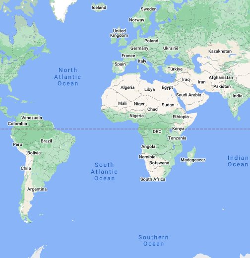

Сайт Портфолио
РТУ МИРЭА - РКЧИР
ИКБО 03 22 Борзов Д.О.
Приветствую вас на странице, где вы можете ознакомиться с моей работой в сфере фронтенд разработки.
Меня зовут Дмитрий, и я начинающий специалист в этой увлекательной области веб-технологий.
Я страстно увлечен созданием интерактивных и креативных пользовательских интерфейсов для веб-приложений.
<>pre
Мои навыки:
HTML/CSS1: Создание красивых и семантических веб-страниц с использованием современных технологий CSS для стилизации.
JS - JavaScript2: Разработка интерактивных элементов, анимаций и обработка событий на клиентской стороне с использованием JavaScript и библиотек, таких как jQuery.
Адаптивная и кросс-браузерная верстка: Гарантированная отзывчивость и работоспособность веб-сайтов на различных устройствах и в разных браузерах.
Сборка и оптимизация: Использование инструментов сборки, таких как Webpack, для оптимизации и улучшения производительности веб-приложений.
Минуту всегда можно превратить в монету.
https://citaty.info/quote/324680
НАЧАЛО КОНЕЦ
Ссылка на остальные цитаты:
ССЫЛКА
Позвонить по номеру
Написать письмо
- Ы
- Ы
- Е
- Книги
- Дешифратор
- 1. В цифровой электронике — комбинационная схема, преобразующая n-разрядный двоичный, троичный или k‑ичный код в k^{n}‑ичный одноединичный код
- 2. Комбинационная схема преобразующая двоичный код в унарный
- Регистор
- 1. Последовательное или параллельное логическое устройство, используемое для хранения n-разрядных двоичных чисел и выполнения преобразований над ними.
- Тригер
- 1. Хранимая процедура особого типа, которую пользователь не вызывает непосредственно, а исполнение которой обусловлено действием по модификации данных.
- 2. Простейший цифровой автомат, элемент памяти. При наличии электропитания способен на длительно время запаминать одно из двухустойчивых состояний.
- Мультиплексор
- 1. Устройство, имеющее несколько сигнальных входов, один или более управляющих входов и один выход. Мультиплексор позволяет передавать сигнал с одного из входов на выход.
- Демультиплексор
- 1. Это логическое устройство, предназначенное для переключения сигнала с одного информационного входа на один из информационных выходов.
Где меня найти

конец странички